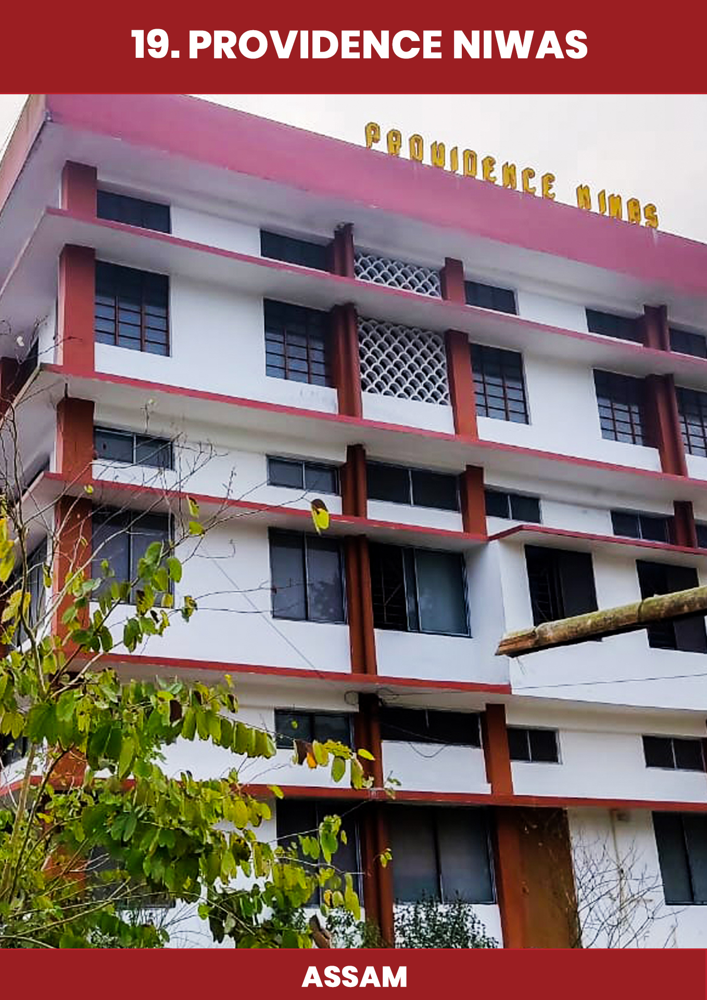
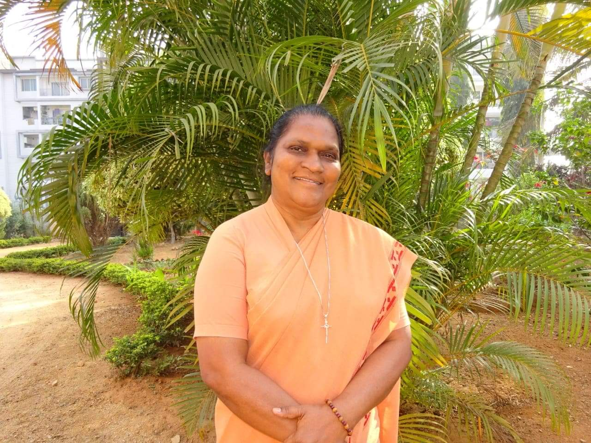
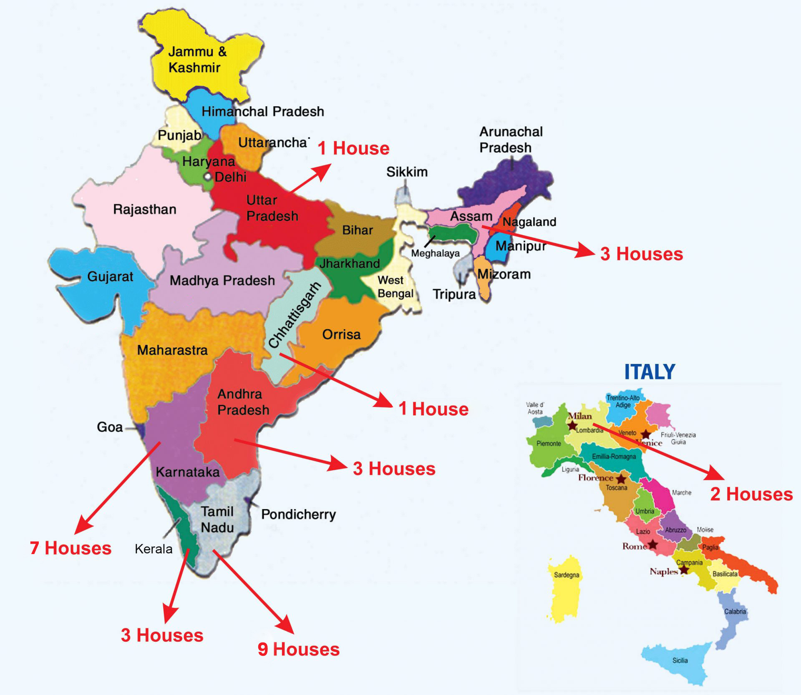
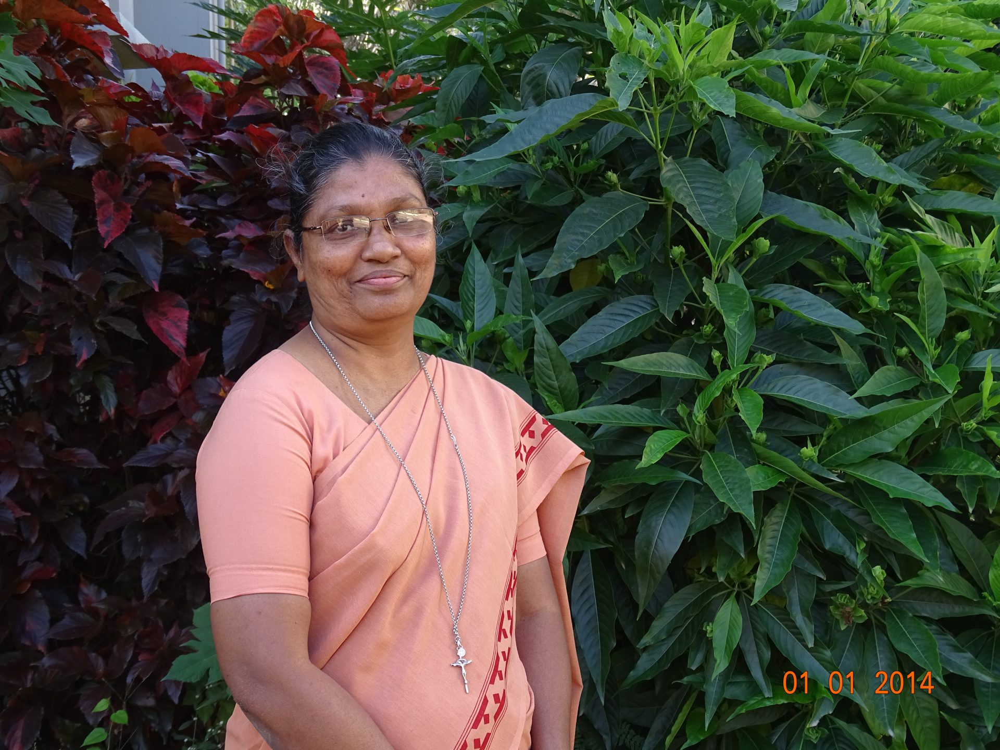
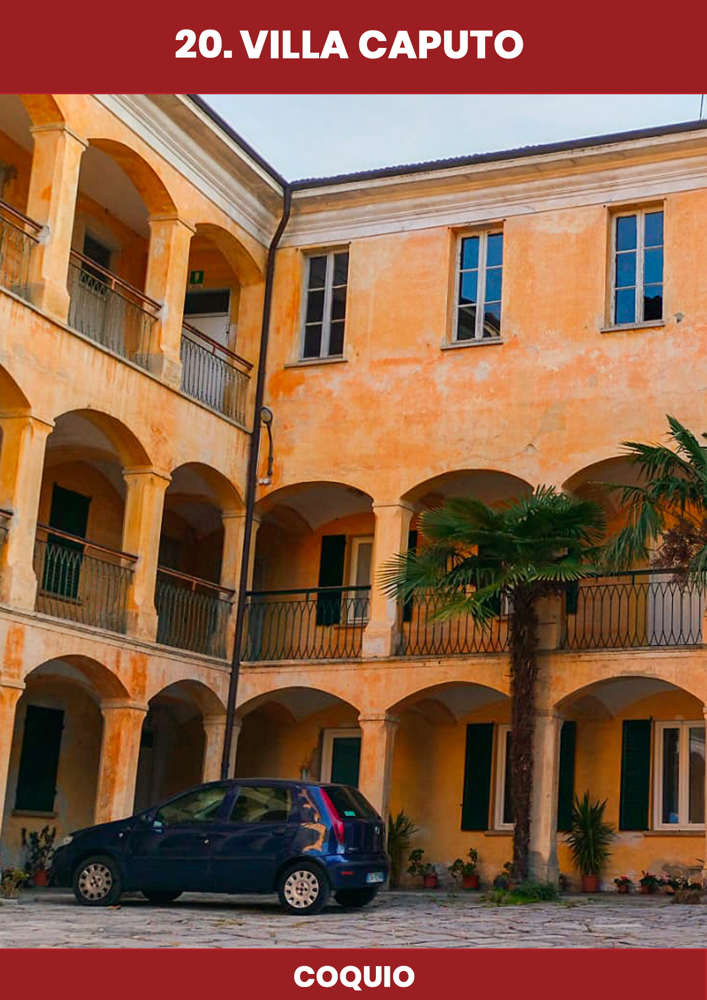
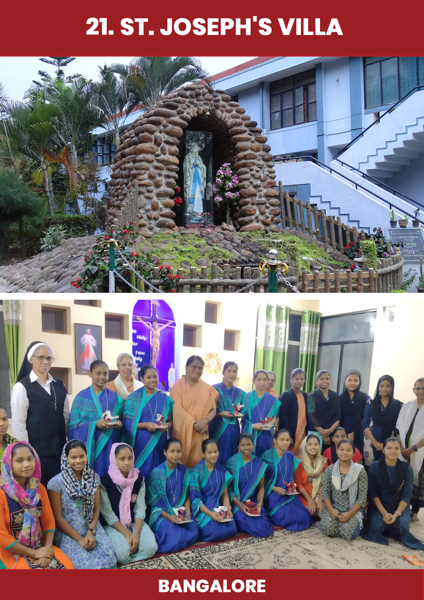
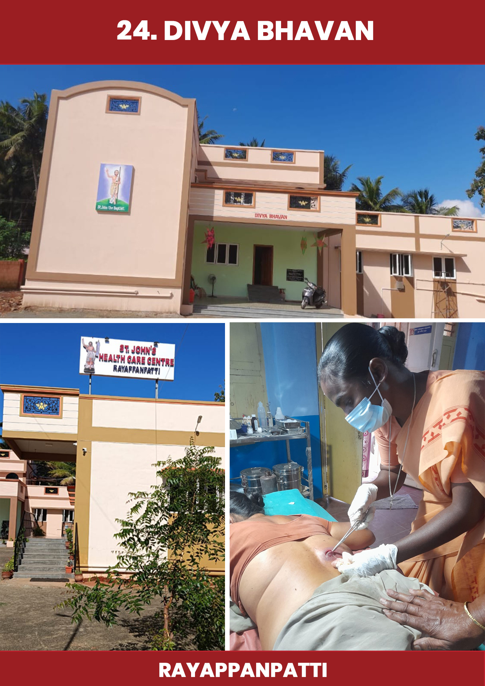
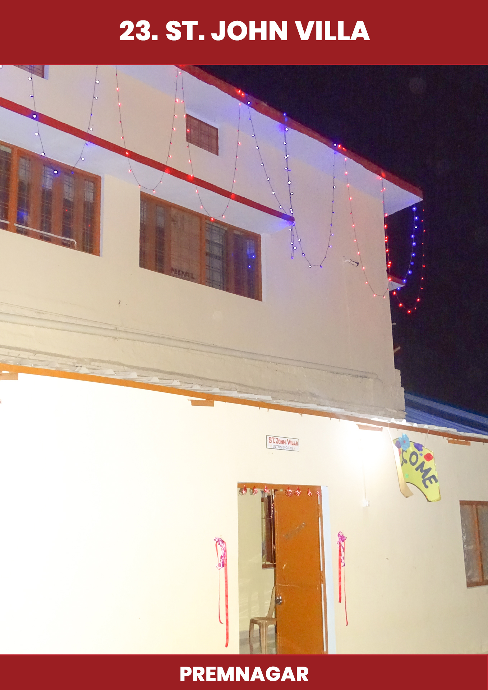
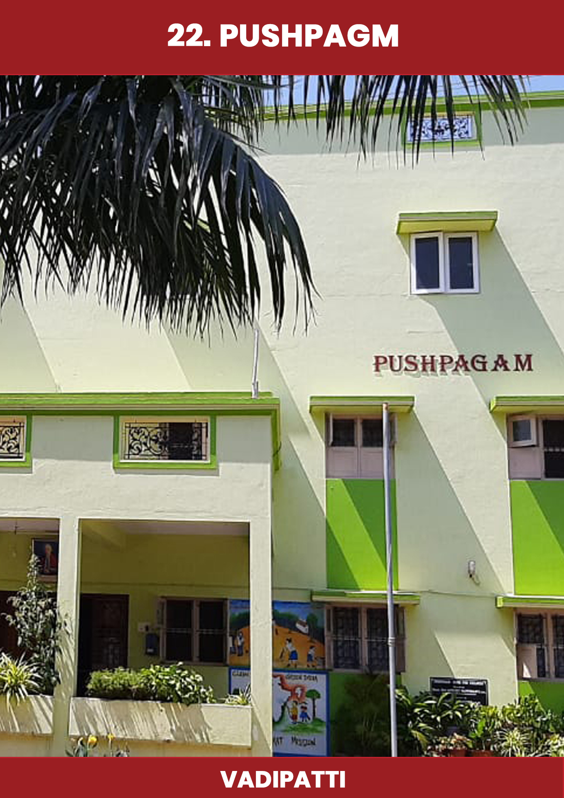

Sr. Arputha Mary
Batch - XII
Sisters of St. John the Baptist, Old Madras Road, Indira Nagar, Bangalore
Prayer · Mission · Education · Service
A renewed digital home for the Indian Province of the Sisters of St. John the Baptist.
Our Identity
The Sisters of St. John the Baptist continue the mission of love, education and pastoral service through communities, institutions and formation across the Indian Province.
Centered in spiritual life and community worship.
Committed to value-based learning and formation.
Serving people with compassion and dignity.
Sharing hope through apostolic works.


Spiritual journey is one of constant transformation. In order to grow, we must give up the struggle to remain the same and learn to embrace change at all times.
Read MoreOur communities are spread across different regions, carrying forward the charism of the congregation through education, pastoral care and social mission.
Communities
Sisters
Ministries
States

Province Family
Batch - XII
Batch - XIII

Batch - XIV
Batch - XV
Our Mission Houses
A modern carousel-style presentation of province communities and mission houses.
Old Madras Road, Bangalore
A center of prayer, service and province administration.

Tamil Nadu
Serving through education and pastoral care.

Tamil Nadu
A mission house committed to community life and ministry.
Updates

June 12
May 28
Apr 18A journey of discernment, prayer, community and apostolic mission.
A sacred place inspired by the life and spirituality of St. Alfonso Maria Fusco.
Responding generously to God's call through Baptistine life and mission.